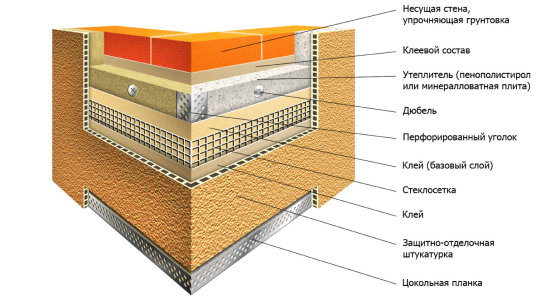
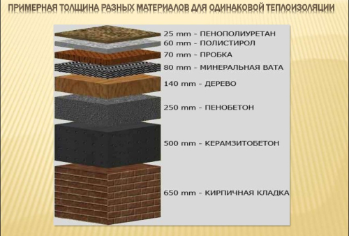

Технология утепления
-
Очищаем стену и наносим на неё клеящий раствор(пена клей).
-
Плотно прислоняем лист утеплителя к стене и прижимаем.
-
Перфорируем отверстия для дюбеля и монтируем его.
-
Проследить что на каждом листе утеплителя по 5 дюбелей.
-
Нанести пену клей на стыки между листами утеплителя.


-
Нанести на утеплитель плиточный клей для наружных работ.
-
Приклеить Армирующую сетку на плиточный клей
-
Нанесение выравнивающего слоя фасадной шпатлёвки.
-
Зачистка и покраска (при желании нанесение декоративной штукатурки).
-
Монтаж металлического отлива поверх всего утепления.
- Герметизация всех стыков к стене.
@@include("_linkArticlesSection.html")